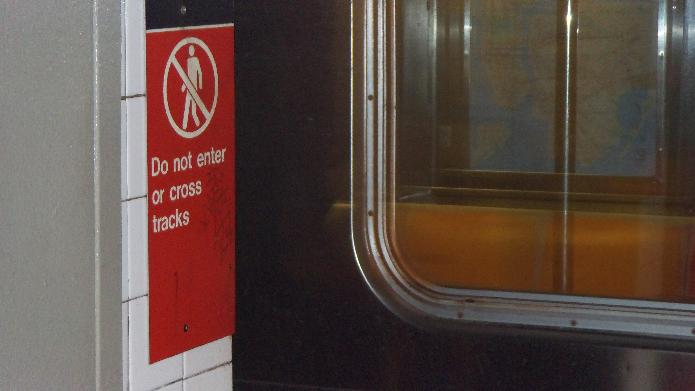

Lights from the station flash by as the train departs. Everything goes dark as you enter a tunnel, and you await your stop.

This image was taken by Hiyoriiko (2022).
Yet, it never comes. What feels like hours later, it stops at a unfamilar station.
You've reached your destination.